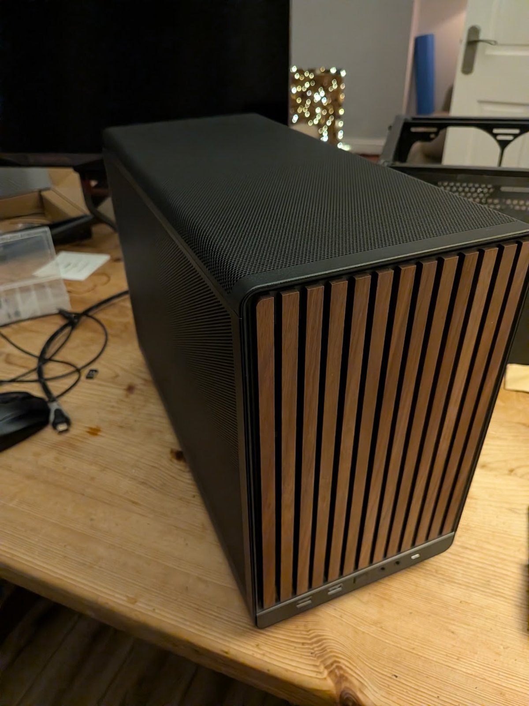

Microsoft Cloud
Microsoft 365 administration across Exchange Online, Teams, SharePoint, identity and access management.
Microsoft 365 administration across Exchange Online, Teams, SharePoint, identity and access management.
Intune, Autopilot, Windows deployment, application packaging, compliance policies and device lifecycle support.
2nd/3rd line support, troubleshooting, process improvement, vendor coordination and hands-on technical delivery.

I enjoy planning parts, building systems and getting everything running exactly how I want it.

Building, painting and playing. It’s a good mix of creativity, detail and strategy.

I’m a big fan of games that are social, strategic and fun to get competitive over.
The aim with this site is to show the work I do without it feeling too stiff. I like practical IT, good documentation, and fixing things properly — but I also like having interests that get me away from the desk.
Climbing is one of the things I enjoy to switch off and stay active, and a lot of my free time is also spent with family and friends, whether that’s travelling, meals out, or just hanging out.